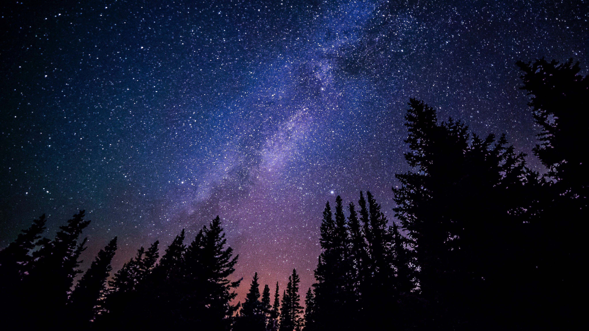

<!-- 開場動畫 -->
<section class="animation-wrapper">
  <!-- 圖片放大 -->
  <section class="animation">
    <div class="hero">
      
    </div>
  </section>
  <!-- 背景色從左至右滑入 -->
  <div class="slider"></div>
</section>
